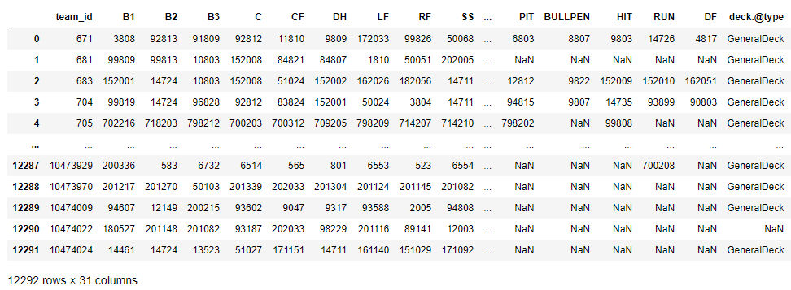
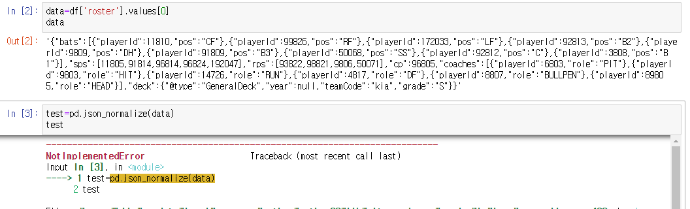
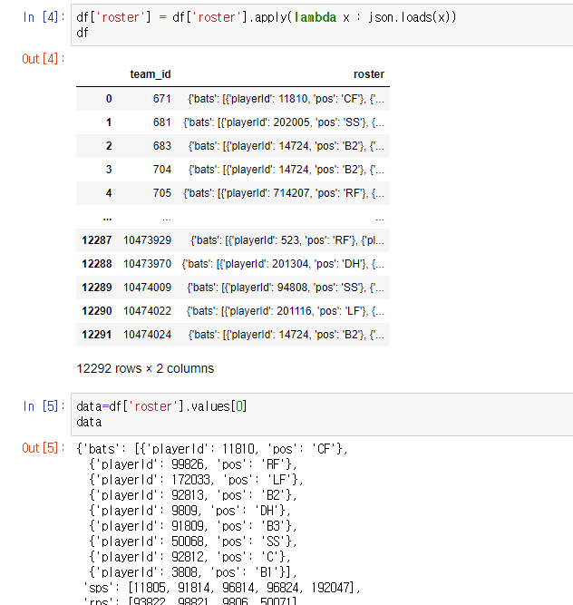
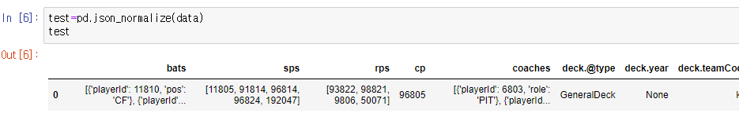
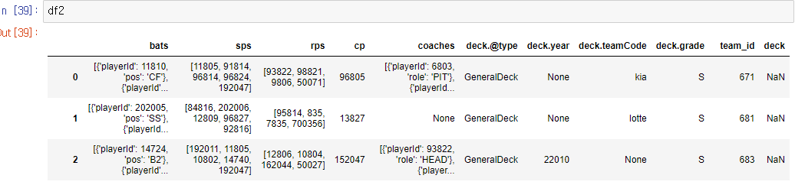

복잡한 형식의 json 처리2
https://jeong3427.github.io/python/2022/01/02/json.html
- 위에서는 json.loads와 json.dumps처리
- 이번에는 json_normalize 사용
.
.
전체 코드
import json
import pandas as pd
df = pd.read_csv('roster.txt', sep='\t')
#json 처리
df['roster'] = df['roster'].apply(lambda x : json.loads(x))
#빈 df 준비
df2 = pd.DataFrame()
#team_id별로 하나씩 꺼내기
for i in df.index:
df_data = pd.DataFrame()
raw_data = df['roster'].values[i]
json_data =pd.json_normalize(raw_data)
df_data = df_data.append(json_data)
df_data['team_id'] = df['team_id'][i]
df2 = df2.append(df_data)
df2= df2.reset_index(drop=True)
#더 이상 가공이 필요없는 데이터 셋
df_set = df2[['team_id','cp','deck.@type','deck.year','deck.teamCode','deck.grade','deck']]
#타자 가공
df_bat_final = pd.DataFrame()
for i in df2.index:
df_bats = pd.DataFrame()
raw_data_bats = df2['bats'].values[i]
data_bats = pd.json_normalize(raw_data_bats)
df_bats = df_bats.append(data_bats)
df_bats['team_id'] = df2['team_id'][i]
df_bat_final = df_bat_final.append(df_bats)
bats_pivot = pd.pivot_table(df_bat_final, index = 'team_id', columns = 'pos', values = 'playerId', aggfunc = 'sum').reset_index(drop=False)
df_bat_set = bats_pivot
#코치 가공
#drop na나 reset index 안 하면 안 돌아감
coach_data=df2.loc[:, ['team_id','coaches']].dropna().reset_index(drop=True)
df_coach_final = pd.DataFrame()
for i in coach_data.index:
df_coach = pd.DataFrame()
raw_data_coach = coach_data['coaches'].values[i]
coach = pd.json_normalize(raw_data_coach)
df_coach = df_coach.append(coach)
df_coach['team_id'] = coach_data['team_id'][i]
df_coach_final = df_coach_final.append(df_coach)
coach_pivot = pd.pivot_table(df_coach_final, index ='team_id', columns = 'role', values='playerId', aggfunc ='sum',fill_value = 0).astype(int)
coach_pivot = coach_pivot.replace(0,'NaN').reset_index(drop=False)
df_coach_set = coach_pivot.reindex(columns = ['team_id','HEAD', 'PIT', 'BULLPEN', 'HIT', 'RUN','DF'])
#sp 와 rp 처리
sp=df2.loc[:,['sps','team_id']]
sp['sp1'] =0
sp['sp2'] =0
sp['sp3'] =0
sp['sp4'] =0
sp['sp5'] =0
for i in sp.index:
sp['sp1'].loc[i]=list(sp['sps'].values[i])[0]
sp['sp2'].loc[i] = list(sp['sps'].values[i])[1]
sp['sp3'].loc[i] = list(sp['sps'].values[i])[2]
sp['sp4'].loc[i] = list(sp['sps'].values[i])[3]
sp['sp5'].loc[i] = list(sp['sps'].values[i])[4]
sp_set = sp.loc[:,['team_id','sp1','sp2','sp3','sp4','sp5']]
rp=df2.loc[:,['rps','team_id']]
rp['rp1'] =0
rp['rp2'] =0
rp['rp3'] =0
rp['rp4'] =0
for i in rp.index:
rp['rp1'].loc[i]=list(rp['rps'].values[i])[0]
rp['rp2'].loc[i] = list(rp['rps'].values[i])[1]
rp['rp3'].loc[i] = list(rp['rps'].values[i])[2]
rp['rp4'].loc[i] = list(rp['rps'].values[i])[3]
rp_set = rp.loc[:,['team_id','rp1','rp2','rp3','rp4']]
#전부 이어 붙이기
from functools import reduce
data_frames = [df_bat_set, sp_set, rp_set ,df_coach_set, df_set]
df_lineup = reduce(lambda left, right : pd.merge(left,right, on =['team_id'], how='outer'), data_frames)
#컬럼 순서 변경. df_lineup.columns 로 체크
df_lineup=df_lineup.reindex(columns=['team_id', 'B1', 'B2', 'B3', 'C', 'CF', 'DH', 'LF', 'RF', 'SS', 'sp1',
'sp2', 'sp3', 'sp4', 'sp5', 'rp1', 'rp2', 'rp3', 'rp4', 'cp','HEAD', 'PIT', 'BULLPEN', 'HIT', 'RUN','DF', 'deck.@type', 'deck.year',
'deck.teamCode', 'deck.grade', 'deck'])
df_lineup
.
최종 결과

.
.
중간 과정
- json.loads를 하지 않으면 values로 체크 했을 시 평범한 텍스트 데이터로 나오고 json_normalize에서 오류 발생

.
.
- json.loads를 하면 values에서 바로 json형식으로 볼 수 있음

.
- normalize에서도 한 번에 데이터 프레임으로 들어간다

.
.
- 처음 for문을 돌고 난 df2의 상태
- json 안의 json으로 저장되어 있는 bats, coaches와 리스트 형태의 sps, rps 확인 가능
- 4개는 추가로 작업 필요
